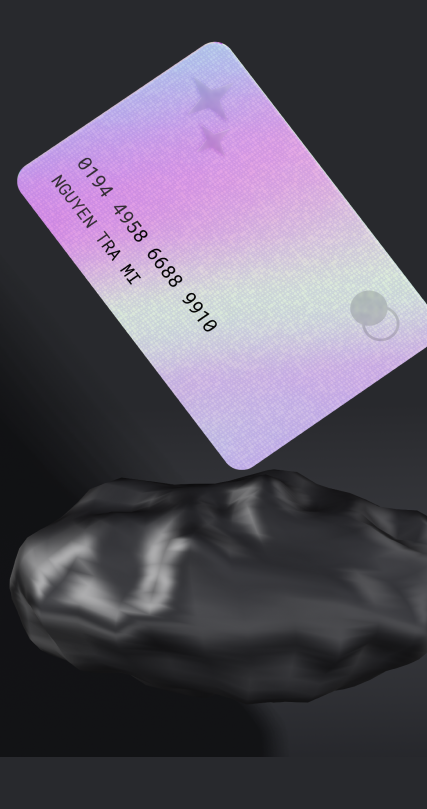
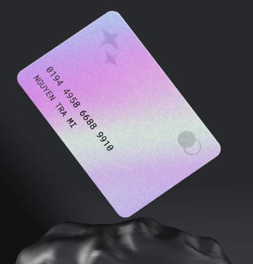
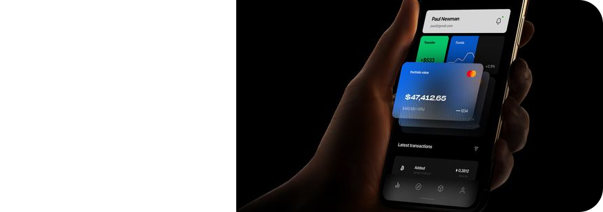
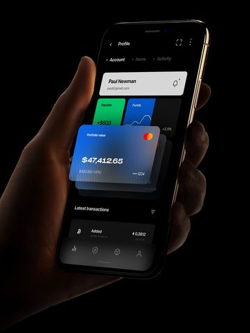

<section class="work">
    <div class="container">
        <div class="work__body">
            <h2 class="work__body-title">
                Where FHE  can it be useful?
            </h2>
            <div class="work__body-box">
                <div class="work__body-box-start">
                    <button class="work__body-box-start-btn">
                        <svg width="26" height="20" viewBox="0 0 26 20" fill="none" xmlns="http://www.w3.org/2000/svg">
                            <path d="M21.358 10L11.358 4.2265L11.358 15.7735L21.358 10ZM4.6416 11L12.358 11L12.358 9L4.6416 9L4.6416 11Z" fill="black"/>
                        </svg>                            
                    </button>
                    
                    
                    <div class="work__body-box-start-text">
                        <span>Finance</span>
                        <p>
                            In the financial industry, FHE can be used to protect financial transactions and customer data when processing payments
                            and financial transactions
                        </p>
                    </div>
                </div>
                <div class="work__body-box-end">
                    <div class="work__body-box-end-item">
                        <div class="work__body-box-end-item-bot">
                            <div class="work__body-box-end-item-bot-text">
                                <span>Cybersecurity</span>
                                <p>Computer security is a section of information security that characterizes the impossibility of damage to a computer exceeding the amount of damage</p>
                            </div>
                            <button class="work__body-box-end-item-bot-btn desktop">
                                <svg width="26" height="20" viewBox="0 0 26 20" fill="none" xmlns="http://www.w3.org/2000/svg">
                                    <path d="M21.358 10L11.358 4.2265L11.358 15.7735L21.358 10ZM4.6416 11L12.358 11L12.358 9L4.6416 9L4.6416 11Z" fill="black"/>
                                </svg> 
                            </button>
                        </div>
                        <button class="work__body-box-end-item-bot-btn mobile">
                            <svg width="26" height="20" viewBox="0 0 26 20" fill="none" xmlns="http://www.w3.org/2000/svg">
                                <path d="M21.358 10L11.358 4.2265L11.358 15.7735L21.358 10ZM4.6416 11L12.358 11L12.358 9L4.6416 9L4.6416 11Z" fill="black"/>
                            </svg> 
                        </button>
                        
                    </div>
                    <div class="work__body-box-end-item">
                        <button class="work__body-box-end-item-btn">
                            <svg width="26" height="20" viewBox="0 0 26 20" fill="none" xmlns="http://www.w3.org/2000/svg">
                                <path d="M21.358 10L11.358 4.2265L11.358 15.7735L21.358 10ZM4.6416 11L12.358 11L12.358 9L4.6416 9L4.6416 11Z" fill="black"/>
                            </svg> 
                        </button>
                        <div class="work__body-box-end-item-bot">
                            <div class="work__body-box-end-item-bot-text">
                                <span>Science & Development</span>
                                <p>FHE is used in research and development to ensure privacy and security when processing sensitive data</p>
                            </div>
                        </div>
                        
                        
                    </div>
                </div>
            </div>
        </div>
    </div>
</section>